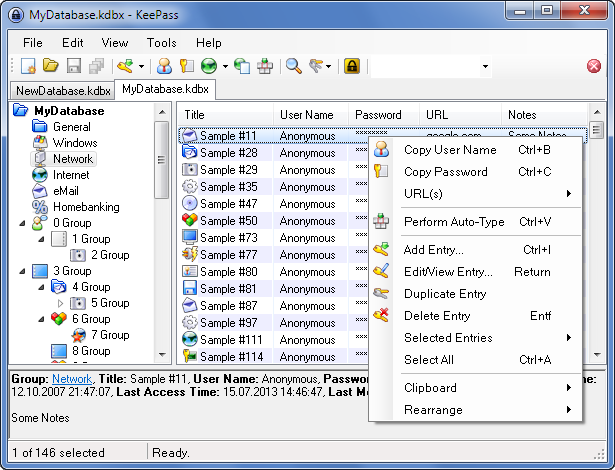

Password Manager
Passwords are a fundamental problem
How many passwords can you remember? Probably only a few, especially if they are long and complicated, as strong passwords should be. How many passwords do you have to remember? Probably a lot of them.
Most people I know work around this fundamental problem by reusing the same passwords everywhere, or by writing all their passwords done on a sheet of paper or in a text file on their computer (this is the one place where plaintext is not optimal!). Both of these solutions leave your account credentials highly vulnerable.
What you really need is a password manager to remember your passwords for you, and store them securely in a strongly encrypted file. Better yet, you need a password manager to generate long, unique, and completely random passwords for all your various systems, web sites, protected spreadsheets, and so on, to assure that they are not easily guessed or cracked. A side benefit: using a password manager makes logins quicker (through auto-fill) as well as easier.
It is unfathomable to me that workplaces still do not provide all employees a password manager to help them manage the mess. Take control of your own passwords by setting up one of the two password managers described below, choosing a strong password to secure your password store, and save time and brainpower on your logins from now on.
Choosing a password manager
There are several password managers available on Windows. I recommend either LastPass (for maximum portability) or KeePass (because it is free and you have complete control over the password safe).
LastPass
LastPass is a cross-platform, cross-browser password manager that integrates with your web browser and helps you sync your passwords across all devices. All of your passwords are encrypted on your computer and then are stored in LastPass's cloud. LastPass is an amazing service, and all the features you really need are free. The only reason not to use it is if you are really concerned about storing your passwords (albeit as an encrypted blob) on a third-party server.
KeePass
KeePass is a free, open source, local password safe. It is not as slick as LastPass, but it is easy to use and keeps your information local. This is my preferred solution for password safes that need to be shared with others at work.
